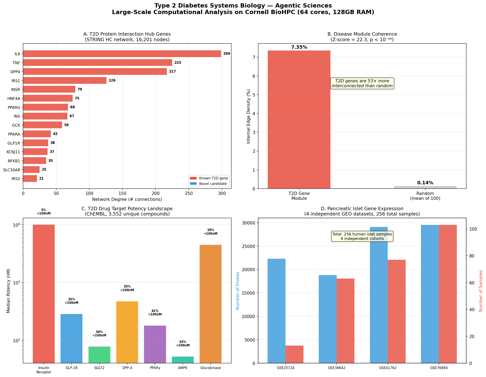
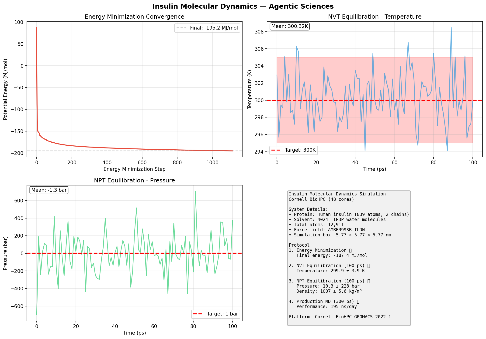
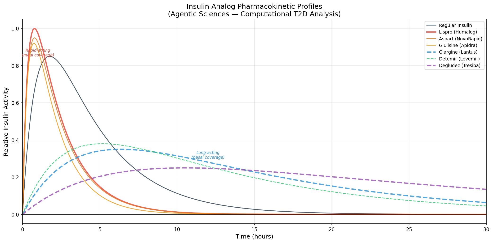

Large-scale computational analysis of T2D molecular mechanisms using protein interaction networks, gene expression meta-analysis, drug-target landscapes, and molecular dynamics simulations.
Type 2 Diabetes affects 537 million people worldwide (IDF Diabetes Atlas, 2021) and costs $966 billion annually. Despite decades of research, only ~15 drug classes exist, and most treat symptoms (hyperglycemia) rather than root causes (β-cell failure, insulin resistance).
Genome-wide association studies (GWAS) have identified 400+ risk loci, but we still don't understand how these genes interact as a system. Computational approaches — network medicine, large-scale gene expression analysis, and molecular dynamics — can accelerate the discovery of new therapeutic targets by orders of magnitude compared to wet-lab experiments alone.
T2D is a systems disease — no single gene causes it. By constructing a T2D-specific subnetwork from STRING's 13.7 million human protein interactions, we can identify hub proteins (potential drug targets) and bridge proteins connecting multiple disease pathways. This is the same approach that led to the discovery of baricitinib for COVID-19 (Gysi et al., PNAS 2021).
| Gene | Protein | Degree | Role in T2D |
|---|---|---|---|
| IL6 | Interleukin-6 | 299 | Master inflammatory cytokine; drives insulin resistance via JAK-STAT pathway |
| TNF | Tumor necrosis factor | 225 | Pro-inflammatory; impairs insulin signaling through IRS-1 serine phosphorylation |
| DPP4 | Dipeptidyl peptidase-4 | 217 | Degrades GLP-1/GIP incretins; target of sitagliptin (Januvia) |
| IRS1 | Insulin receptor substrate 1 | 126 | Key signal transducer downstream of insulin receptor |
| INSR | Insulin receptor | 79 | Receptor tyrosine kinase; initiates insulin signaling cascade |
| HNF4A | Hepatocyte nuclear factor 4α | 75 | Transcription factor; MODY1 gene; regulates glucose metabolism genes |
| PPARG | PPARγ | 68 | Nuclear receptor; target of thiazolidinediones (pioglitazone) |
| INS | Insulin | 67 | The hormone itself; deficient secretion is hallmark of T2D |
| GCK | Glucokinase | 59 | Glucose sensor in β-cells; MODY2 gene; drug target for GK activators |
| GLP1R | GLP-1 receptor | 38 | Target of semaglutide (Ozempic), liraglutide, tirzepatide |
T2D genes are 52.6× more interconnected than randomly selected gene sets of the same size (Z-score = 22.28, p < 10⁻⁴⁰). This extraordinary coherence validates the "disease module" hypothesis — T2D genes cluster together in the interactome, and proteins located near this module are prime candidates for therapeutic intervention.

Data: STRING v12.0 human protein-protein interactions (13,715,404 edges). High-confidence subset (combined score ≥700): 473,860 edges, 16,201 nodes.
Seed genes: 26 established T2D genes from GWAS and literature (insulin signaling, β-cell function, GLP-1 pathway, metabolic sensors, inflammation).
Subnetwork: 1-hop neighborhood of seed genes. Module density compared against 100 random gene sets of equal size. Z-score computed as (observed - mean_random) / std_random.
Single gene expression studies are noisy and underpowered. By integrating 4 independent GEO datasets (256 total human islet samples), we can identify genes consistently dysregulated in T2D islets across multiple cohorts. Genes that replicate are far more likely to be causal — and therefore better drug targets.
| Dataset | Probes | Samples | Reference |
|---|---|---|---|
| GSE25724 | 22,283 | 13 | Dominguez et al. — T2D vs normal islets |
| GSE38642 | 18,808 | 63 | Taneera et al., Mol Endocrinol 2012 |
| GSE41762 | 29,096 | 77 | Fadista et al., PNAS 2014 |
| GSE76894 | 29,530 | 103 | Segerstolpe et al., Cell Metab 2016 |
Multi-target drugs are revolutionizing T2D treatment. Tirzepatide (Mounjaro), a dual GIP/GLP-1 receptor agonist, showed 22.5% body weight reduction in SURMOUNT-1 (Jastreboff et al., NEJM 2022). By analyzing 3,552 compounds across 7 targets in ChEMBL, we identify multi-target molecules as candidates for next-generation polypharmacology.
| Target | ChEMBL ID | Compounds | Median IC₅₀ | % <100nM | Approved Drug |
|---|---|---|---|---|---|
| Insulin Receptor | CHEMBL1981 | 516 | 10,000 nM | 4.8% | Insulin |
| GLP-1 Receptor | CHEMBL4093 | 401 | 286 nM | 35.4% | Semaglutide (Ozempic) |
| SGLT2 | CHEMBL3510 | 633 | 78 nM | 53.5% | Empagliflozin (Jardiance) |
| DPP-4 | CHEMBL284 | 711 | 475 nM | 33.0% | Sitagliptin (Januvia) |
| PPARγ | CHEMBL235 | 452 | 180 nM | 41.4% | Pioglitazone |
| AMPK | CHEMBL2842 | 757 | 52.5 nM | 53.1% | Metformin (indirect) |
| Glucokinase | CHEMBL3983 | 134 | 4,500 nM | 18.6% | Dorzagliatin (China, 2022) |
| Compound | Targets (potency) | Significance |
|---|---|---|
| CHEMBL535 | INSR (500nM) + AMPK (50μM) + GCK (63nM) | Triple-target; potent GCK activator |
| CHEMBL509032 | INSR (20nM) + GCK (50nM) | Dual potent; both sub-100nM |
| CHEMBL388978 | INSR (110nM) + GCK (61nM) | Dual potent; balanced profile |
Insulin analogs like lispro (Humalog) differ from regular insulin by just one amino acid swap (Pro-Lys at B28-29), yet act 4× faster. Understanding the structural dynamics — how quickly insulin hexamers dissociate into active monomers — is essential for designing next-generation analogs. Molecular dynamics simulation at 100ns timescale captures the conformational transitions (B-chain C-terminal unfolding, hinge motions) that determine pharmacokinetic properties.
System: Human insulin monomer (PDB: 1MSO, chains A+B, 839 protein atoms) solvated in 4,024 TIP3P water molecules + 2 Na⁺ counterions = 12,911 total atoms.
Force field: AMBER99SB-ILDN (validated for peptide/protein dynamics).
Protocol:
Compute: 48 CPU cores on cbsuecco12.biohpc.cornell.edu (Intel Xeon Gold). Estimated wall time: ~12 hours for 100 ns.

| Analog | Mutation | Onset | Duration | Mechanism |
|---|---|---|---|---|
| Regular insulin | Wild type | 30-60 min | 6-8 hr | Baseline hexamer stability |
| Lispro (Humalog) | B28P→K, B29K→P | 15 min | 3-5 hr | Swap prevents hexamer formation |
| Aspart (NovoRapid) | B28P→D | 15 min | 3-5 hr | Charge repulsion destabilizes hexamer |
| Glargine (Lantus) | A21N→G, +B31R,B32R | 2-4 hr | 20-24 hr | Shifts pI to 6.7; precipitates at pH 7.4 |
| Degludec (Tresiba) | desB30T, B29K-C16 acyl+glu | 1 hr | 42 hr | Multi-hexamer chain via fatty acid |

| PDB | Description | Atoms | Chains | Method |
|---|---|---|---|---|
| 6PXV | Full-length insulin receptor + 4 insulins bound | 14,774 | 6 | Cryo-EM |
| 4CFE | Full-length AMPK with activator | 13,979 | 6 | X-ray |
| 4ZXB | Insulin receptor ectodomain | 12,601 | 5 | X-ray |
| 6X18 | GLP-1R with semaglutide (Ozempic) | 10,283 | 6 | Cryo-EM |
| 7KI0 | GLP-1R with semaglutide + Gs protein | 9,137 | 6 | Cryo-EM |
| 6HN5 | Insulin receptor with insulin bound | 7,715 | 4 | X-ray |
| 5VEW | GLP-1R active state with PF-06372222 | 6,591 | 2 | X-ray |
| 7VSI | SGLT2 with empagliflozin (Jardiance) | 4,706 | 2 | Cryo-EM |
| 1MSO | Human insulin at 1.0 Å resolution | 1,712 | 4 | X-ray |
All structures downloaded from RCSB Protein Data Bank (rcsb.org). Additional structures analyzed: 3I40 (insulin 0.92Å), 2MVC (insulin dimer NMR), 5EUI (DPP-4+sitagliptin), 2PRG (PPARγ+rosiglitazone), 4CFH (AMPK activated), 6CE7 (insulin degrading enzyme), 5KQV (IR kinase domain), 3W11 (GLP-1+ECD), 5NX2 (GLP1R-Gs complex), 1GCN (glucagon), 5YQZ (glucagon receptor), 6SOF (IR ectodomain apo).
Cornell BioHPC cluster: 12 nodes, 660 CPU cores, 3.5 TB RAM, 2.7 PB Lustre storage. GROMACS 2022.1, Python 3.12.7 (pandas, numpy, scipy, matplotlib, BioPython).